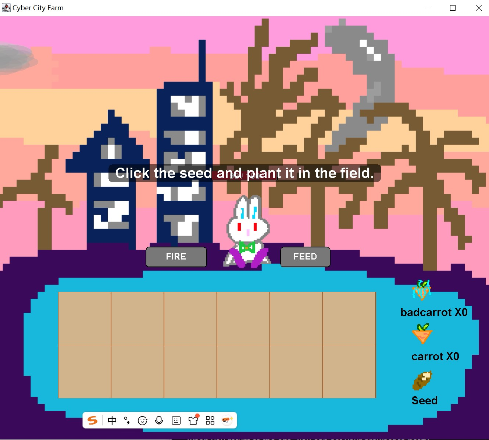

Project 01
Cyber City Farm
A Java-based interactive game that combines hand-drawn visual design, farming mechanics, and playful character interaction.

Overview
Project Overview
Cyber City Farm is a small interactive game built with Java. In this project, I developed a playful farming experience in a cyber-themed visual world. The game combines planting, harvesting, feeding, and character interaction in a light and engaging format.
One of the most important parts of this project is that I hand-drew all of the scenes, props, and characters myself. This allowed me to build a stronger visual identity for the game and create a world that felt personal and original rather than using premade assets.
Role
My Contribution
I was responsible for both the visual and technical development of the project. I illustrated the game assets, designed the overall look of the environment, and programmed the interactive system in Java.
This project reflects my interest in combining creative storytelling, worldbuilding, and coding into one digital experience.
Process
Design and Development Process
I first started by planning the visual direction of the game. Since I wanted the game to feel playful and distinct, I designed the scenes, props, and characters by hand. This step helped me establish the world of the project before moving into programming.
After the visual concept was clear, I moved into Java development. I built the core mechanics of the game, including interaction, object behavior, and the basic game flow. During this process, I focused on making the player experience simple, readable, and enjoyable.
Finally, I refined both the visuals and the gameplay structure so that the project felt more complete. This included balancing the relationship between the illustrated assets and the coded system, making sure the design and functionality supported each other.
Outcome
Reflection
This project helped me strengthen both my visual design practice and my technical development skills. I learned how to connect hand-drawn artwork with programming logic in a way that creates a more unified interactive experience.
It also showed me how game design can become a space where illustration, storytelling, and coding work together instead of being treated as separate parts.